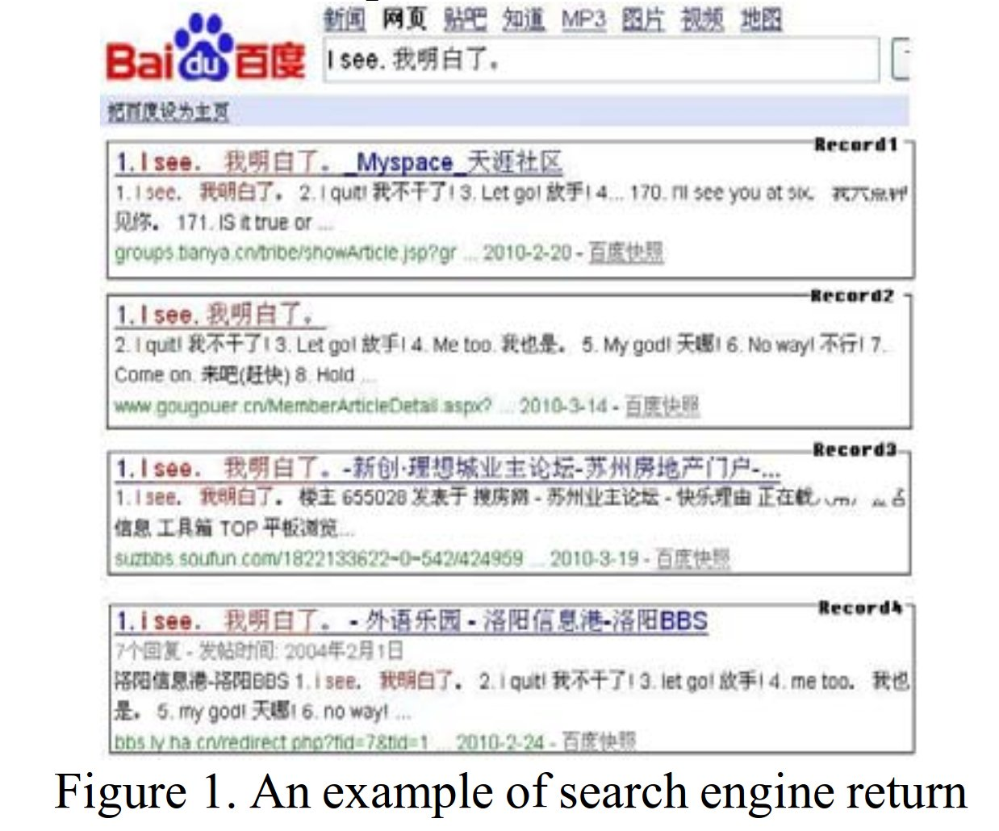
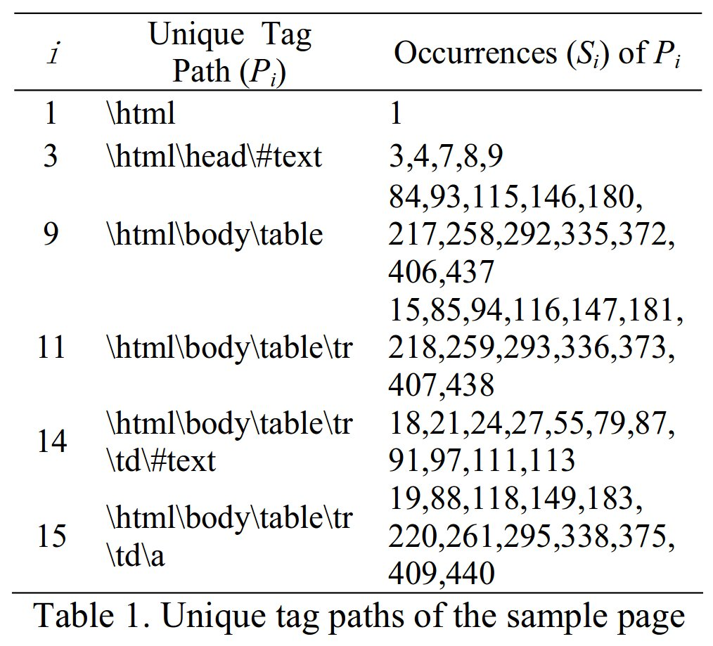

A Novel Method for Bilingual Web Page Acquisition from Search Engine Web Records
検索エンジンを使って bilingual web page を探す
Introduction
- パラレルコーパスみたいなのを作るのにwebページを利用したい
- 1つのページの中でバイリンガルなのがある
こういうのを使って有益なパラレルコーパスを作る既存研究がある (Jiang, 2009)
既存研究だとweb page を決め打ちで使ってるだけなので、 検索エンジンを用いて手広く蒐集したい
Overview

- Baidu を使う
- parallel sentence pairs で検索
- ヒットしたページについて、HTMLタグ奇麗に取り除いてそれっぽいテキストを抜き出す
- HTML構造についてのパターンを使ってクラスタリング (?)
- ちゃんと bilingual になってるかどうかを判定 (分類)
Clustering with Path Similarity
HTMLタグのパスで欲しいテキストを抽出する

- パス (\(P\)) についてクラスタリングをする
- パスの類似度を定める必要
- パスが指す要素の最短距離と定める
- \(P_11\) の位置 \(=227\) (出現位置の平均)
- \(P_15\) の位置 \(=215\)
- \(distance(P_11, P_15) = abs(227 - 215)\)
一つのパスによって表現されるHTML要素は、大体一つのページにおいては一箇所に固まっていて、 その重心をもってパスが指す座標 (一次元) とする. web page の上で近い位置にあるものは、似たクラスにあるテキストだろう.
Bilingual Web Page Verification
Experiments and Results
Dataset
Evaluation
Conclusion
 paper/
paper/